Cross-Validation Results: Automatic Report and Interpretation
Metrics by Fold
| Fold |
R2 |
MSE |
RMSE |
MAE |
| 1 |
-0.752206 |
538.392057 |
23.203277 |
19.560000 |
| 2 |
0.074011 |
107.311867 |
10.359144 |
7.796667 |
| 3 |
-14.761004 |
344.990867 |
18.573930 |
16.386667 |
| 4 |
0.300719 |
123.714467 |
11.122701 |
10.003333 |
| 5 |
-0.069339 |
324.870983 |
18.024178 |
16.015000 |
Feature Importance (mean ± std)
| feature |
mean_importance |
std_importance |
| OR |
0.145530 |
0.021631 |
| TL |
0.144669 |
0.033071 |
| TR |
0.106194 |
0.017804 |
| CR |
0.105932 |
0.029704 |
| PR |
0.098231 |
0.023448 |
| PL |
0.096119 |
0.042212 |
| CL |
0.091379 |
0.029945 |
| FL |
0.075790 |
0.026355 |
| FR |
0.069237 |
0.025740 |
| OL |
0.066918 |
0.010099 |
Main Plots
feature_importances_mean_std.png
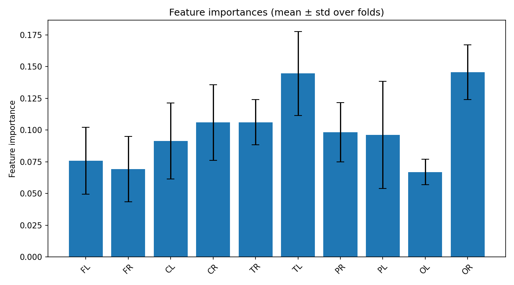
feature_importances_correlation_heatmap.png
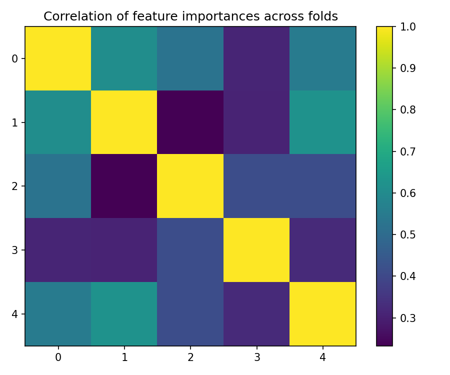
best_fold_4_feature_importances.png
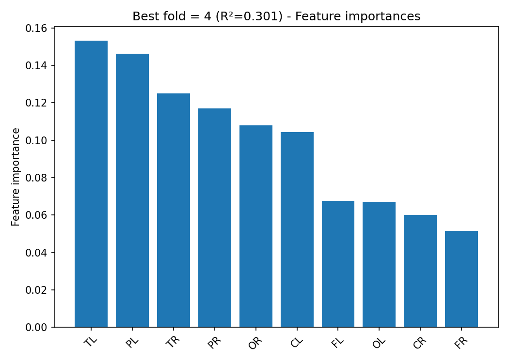
True vs Predicted Scatter Plots (by fold)
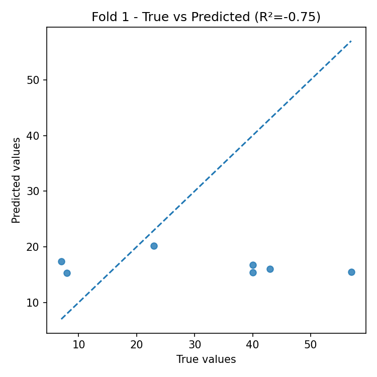
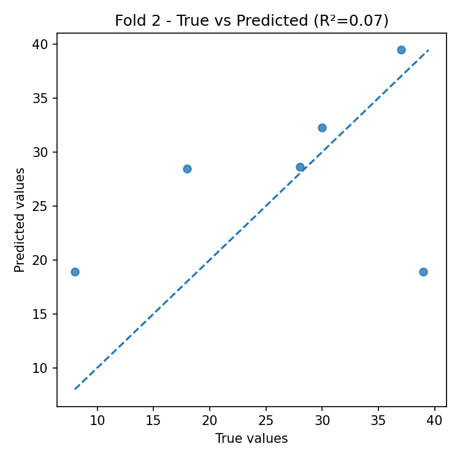
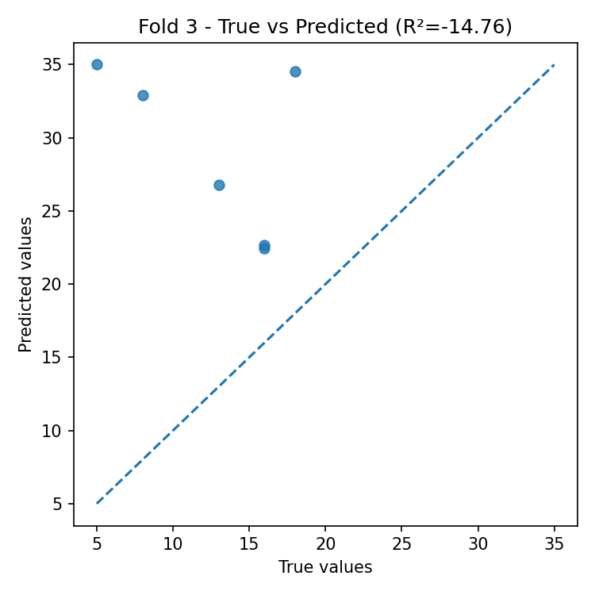
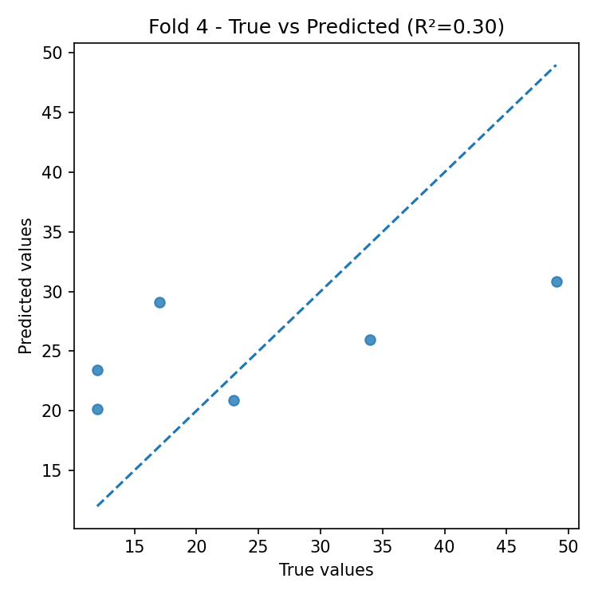
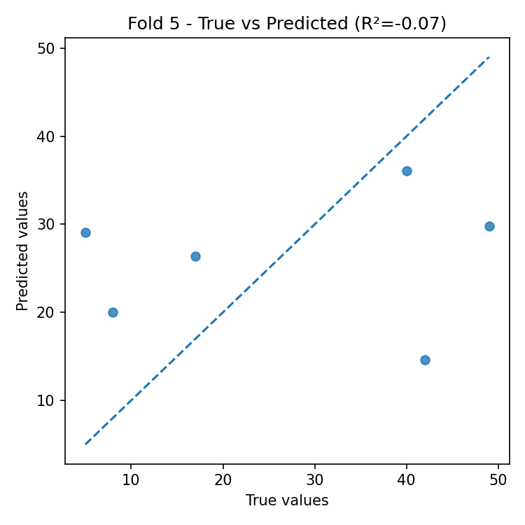
Residual Plots (by fold)
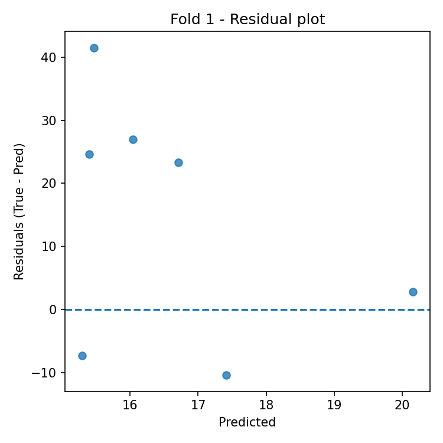
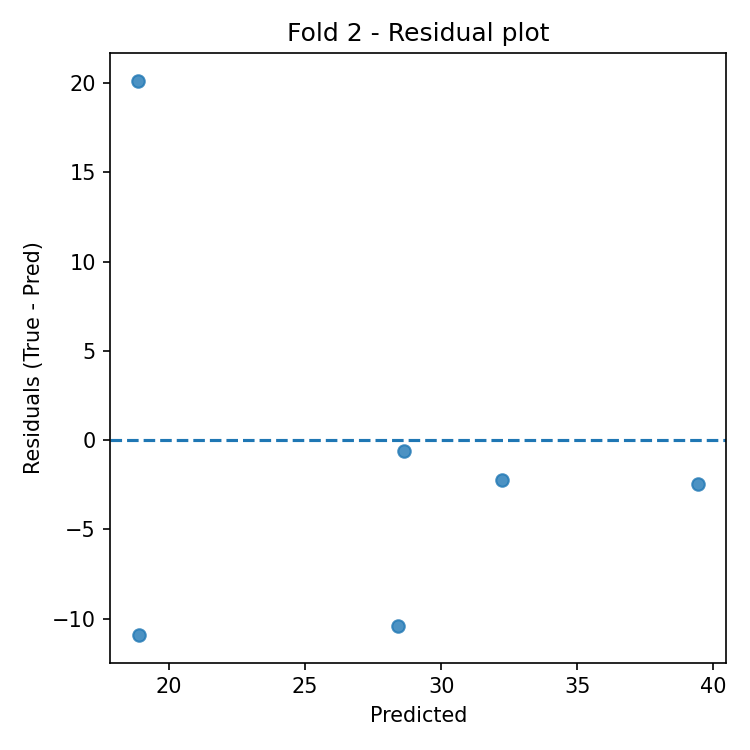
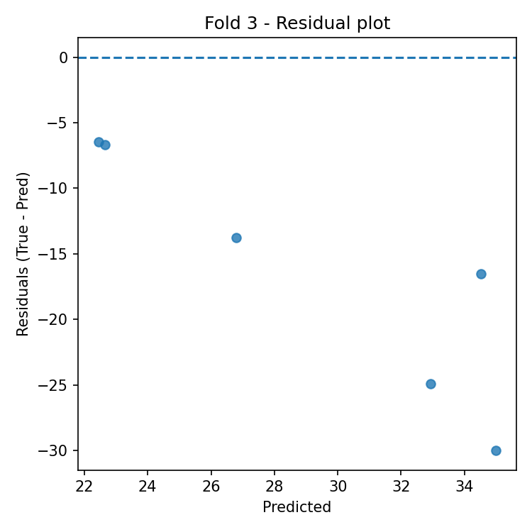
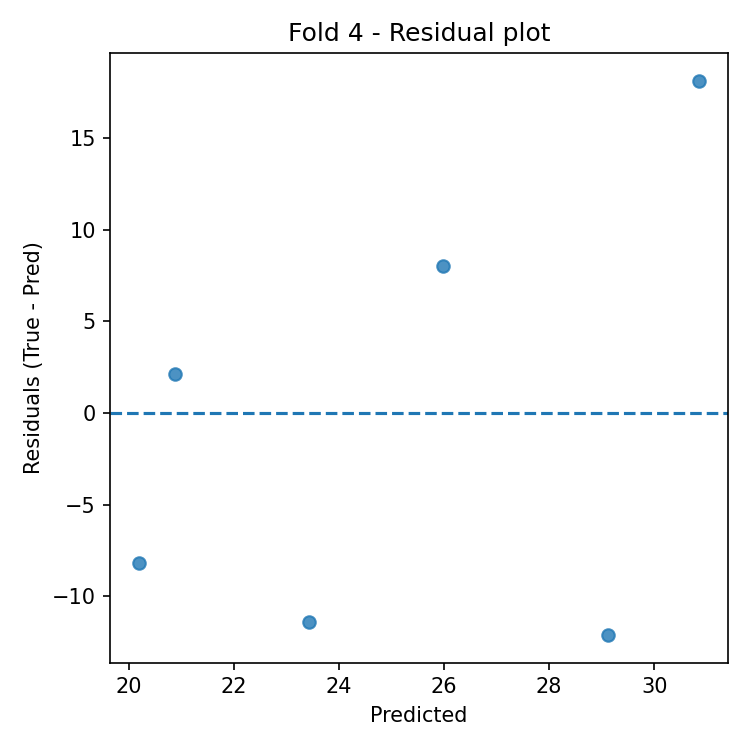
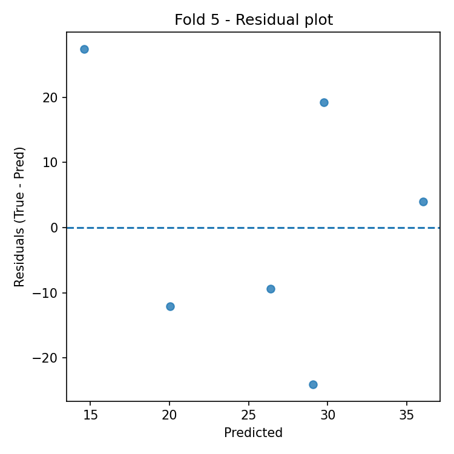
Automatic Interpretation
Overall Performance
- Mean R² across folds: -3.042 (± 6.563).
- Average error: RMSE = 16.257, MAE = 13.952 (same unit as target variable).
Model Stability
- R² variability across folds is high (std = 6.563).
- Average feature importance stability across folds: 0.026 (lower = more stable).
Most Important Features (average across all folds)
- Top-3: OR (0.146), TL (0.145), TR (0.106).
Best Fold
- Best fold: 4 with R² = 0.301.
- In the best fold, the most important features are: TL (0.153), PL (0.146), TR (0.125).
Residual Analysis (best fold)
- Residuals–predictions correlation: 0.427 (0 ≈ absence of linear bias).
- |Residuals|–predictions correlation: 0.806 (positive values indicate possible heteroscedasticity).
- Outliers (|res| > 3·std): 0.